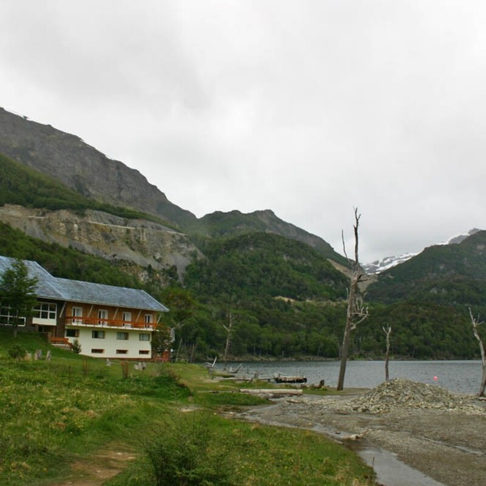

Ushuaia
Lago escondido
El lago escondido es una joya natural ubicada a 60km de Ushuaia. Su nombre proviene del hecho de que el lago se encuentra oculto entre montañas, y no es visible hasta que se llega a un punto específico del camino. Se puede acceder a través de la Ruta Nacional 3, que ofrece vistas espectaculares durante el recorrido. Durante nuestra aventura, disfrutamos de una caminata tranquila a orillas del lago, mientras Fabrizzio exploraba cada rincón curioso del bosque.